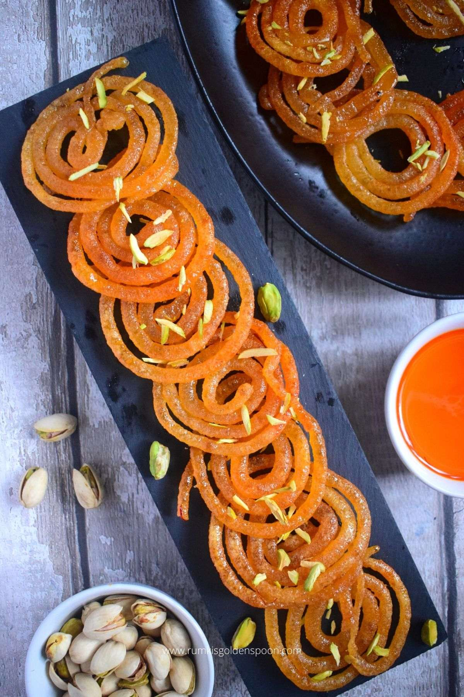

Cook & Trade
Recipes to Trade
Start Trading
Login
Signup
Jalebi
By Kushal Tandon

Jalebi is one of the top 10 most popular sweets from Indian Cuisine.
Jalebi has crispy, chewy texture and is coated with sugar syrup.
Traditional method to make jalebi takes lot of time so this instant
jalebi recipe is a time saver.